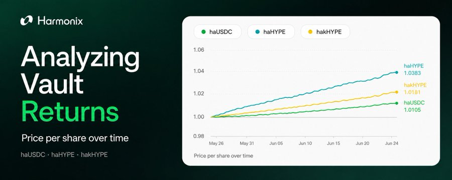

Harmonix App
I focused the product copy on the questions users need answered before depositing: how the vaults work, where yield comes from, and where funds go.
Community outreach and product education to help users evaluate vaults, make informed deposits, and stay engaged.
I focused the product copy on the questions users need answered before depositing: how the vaults work, where yield comes from, and where funds go.
I used price per share to explain vault performance beyond headline APY. The piece gave the community a clearer way to follow returns over time and understand what the numbers meant.

Users value transparency and proof of funds. I researched Octav and drove its integration, then explained how users could inspect wallets, transactions, and deployed positions for themselves.
I showed users where to check current yields and follow performance after depositing.
The documentation explains how the vaults work, with technical detail for users evaluating the product and partners building on it.
The launch messaging explained what the integration enabled and why it mattered to Pendle users. Communication across X, Discord, documentation, and partner channels brought the same core message to both communities.
Harmonix × @pendle_fi. Incoming.
Capital is deployed across delta-neutral strategies, lending markets, and Pendle principal token positions, generating yield from multiple independent sources while you hold.
The announcement connected investor backing to Harmonix’s longer-term direction, giving the community context on the team’s ambitions and the next stage of development.
A concise milestone update that made protocol growth visible to users and partners, with the $16M TVL figure at the center of the message.
The update brought product changes, integrations, and audits into one place so the community could see what had shipped and what it meant for users.
The thesis gave Harmonix a consistent story: making liquidity productive within Hyperliquid. It connected vaults, staking, and stablecoin infrastructure in language that could guide future product and community communication.
The migration message connected a technical move to its relevance for users, explaining how HyperEVM fit Harmonix’s product direction and place in the wider ecosystem.